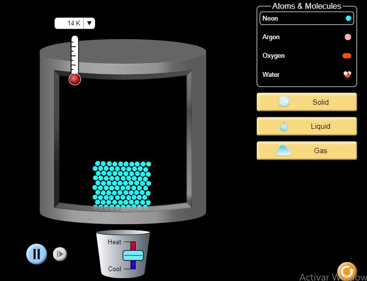

Al aumentar la presión, las partículas se acercan y la fuerza de cohesión entre ellas se incrementa. Por ello, un gas se puede trasformar en líquido si se somete a altas presiones. la presión hace variar la temperatura a la cual las sustancias cambian de estado. así, el punto de ebullición disminuye cuando la presión es baja y viceversa.
Estados de Agregación de la materia
Cambios de estado por efecto de la presión
Actividad
PRACTICA Y APRENDE

Dale click el siguiente link y descubre como cambia el estado de agregación de la materia modificando la temperatura y la presión a la cual es sometida una sustancia:
https://phet.colorado.edu/sims/html/states-of-matter-basics/latest/states-of-matter-basics_all.html
Obra publicada con Licencia Creative Commons Reconocimiento No comercial Compartir igual 4.0